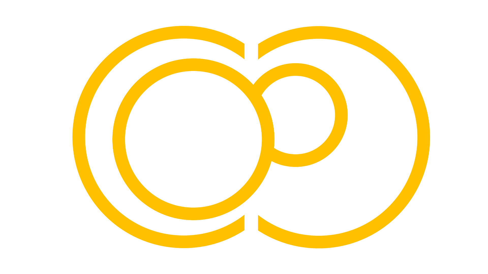
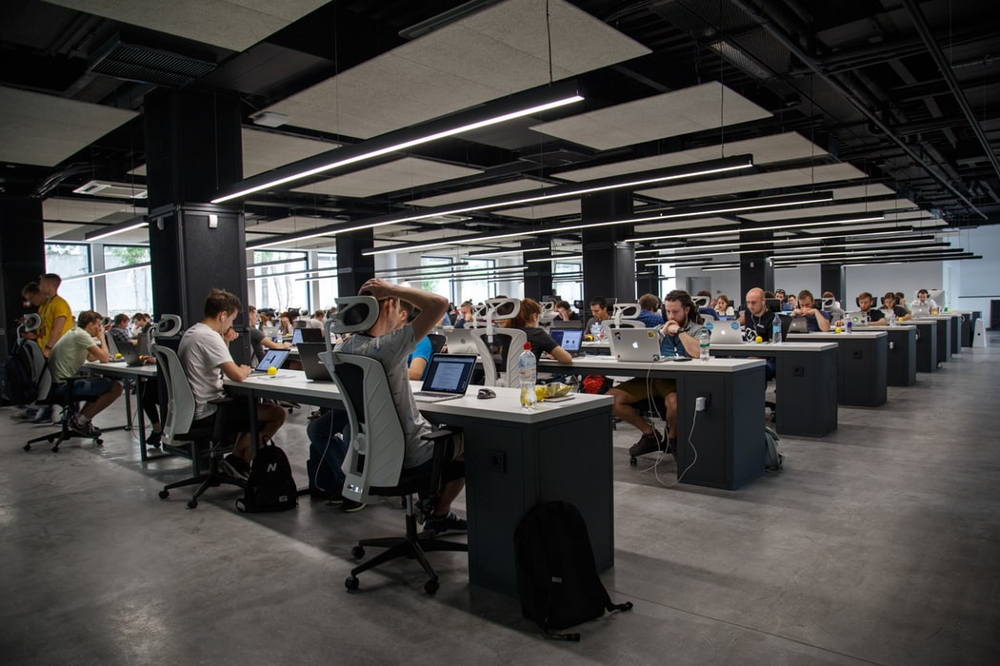
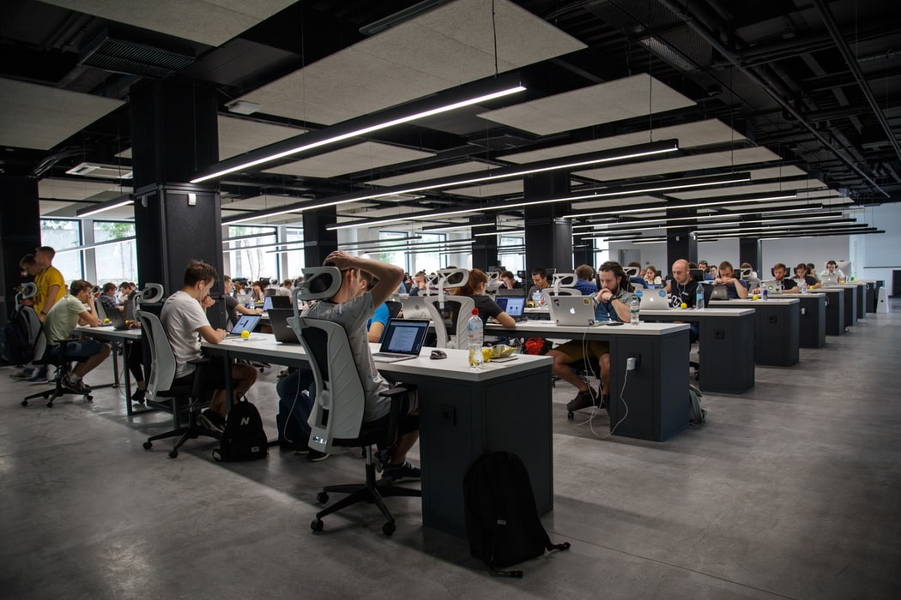
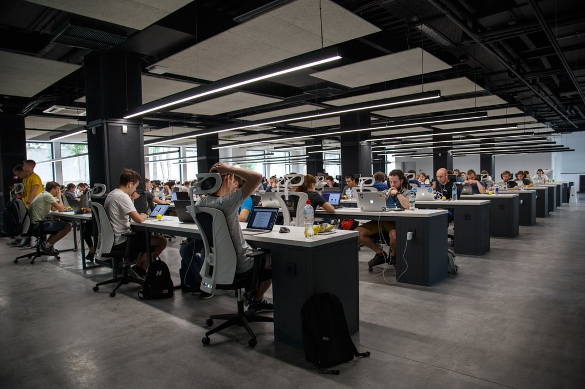

 


The Problem
According to the Health and Safety Executive (2018), depression and anxiety accounted for 49% of all sick days taken by employees between 2016 and 2017; equating to an annual loss of 12.5 million working days. Combined with costs associated with presenteeism and staff turnover, mental health amounts to an outgoing of £33 to £42 billion for employers every year (Stevenson & Farmer, 2017).
The Solution
The Coell online platform is designed to bring employees from SMEs together to follow and share their passions, creating connected wellness within the working community. Coell’s platform enables employees to:
- Start their own societies or join existing ones
- Attend society events and regain a sense of autonomy and fulfillment
- Reconnect with colleagues and the world while boosting the wellness of their team but also their motivation and productivity back in the workplace
The Journey
- For this project I collaborated with a Psychology with Innovation student.
- We started by validating the problem by performing desk research and interviewing employees and employers about their workplace experiences and their wellbeing status.
- We then compiled our insights from research into a proof of problem/opportunity report which helped us to analyse the root causes of the issues and determine a series of solutions.
- Testing these solutions with our stakeholders as well as with experts of the field, we arrived at a mixture of several ideas including the Coell digital platform for employees.
- We created an awareness campaign in the form of a video and website to test whether this iteration of the product would be desirable.
- Throughout this process, we advised other teams on how they could perform their product iteration steps and were advised by experts on how to move forwards with our processes.
- From feedback, we tweaked the final service to be more feasible for us as a startup and more desirable to the employees.